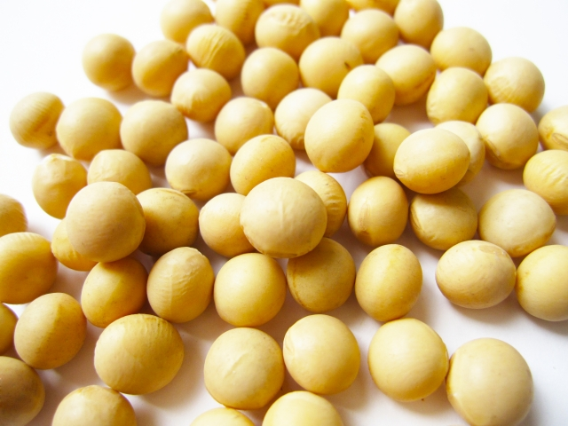

ふるさとを食卓に。
毎日のごはんと一緒に。
NEWS
-
6月度のレシピコンテスト結果発表！
1位に日立市の近藤ママさんの「ねばねば蕎麦」が輝きました！
-
新商品「姫納豆」発売！
茨城県水戸市の梅の花から抽出した「梅の乳酸菌」入りのタレ。 ほんのり梅風味のタレと小粒大豆で食べやすく仕上げました。
-
2019年度「ふるさと納税」アワードで金賞！
2019年度の「ふるさと納税」アワードで「納豆姫」が金賞を受賞しました。
こだわり
地産地消で町おこし
原料にこだわり、厳選された茨城県産大豆を主に使用しています。茨城県各地の豊かな食材を使った新しい納豆を開発したり、近年は
関東各地で大豆を契約栽培をしています。
地産地消を通して、町全体が豊かになる町おこしを目指しています。
徹底した品質管理と高い技術で、納豆づくりと向き合い本物のおいしさを生み出しています。
消費者のメリット
- 新鮮でより安価に手に入れられます。
- 消費者自らが生産状況などを確認でき、安心です。
- 食と農について親近感がわくので、生産と消費の関りや伝統的な食文化について、理解を深めることができます。
生産者のメリット
- 効率的な生産ができます。
- 流通経費を節減でき、収益性の向上が期待できます。
- 対面販売により消費者の反応や評価が直接届き、生産者が品質改善や顧客サービス向上につながります。
町おこしにつながる
- 料理店や旅館には、地元食材を活用した特徴のあるメニューを提供することで、地元や観光客を集めることができるようになります。
- 食品製造業者には、地元食材を利用することで、流通経費や環境負荷の軽減につながります。
商品
-
new!姫納豆
水戸市の梅の花から抽出した「梅の乳酸菌」入りのタレでほんのり梅風味！
-
水戸っ子
ほんのりした甘味とふっくらもっちりした食感。ごはんとの相性抜群！
-
豆豆太郎
たまご醤油タレがついている極小粒大豆を使用したご飯に合う納豆。
-
とろっと豆
極小粒大豆を用い、発酵熟度の高い、昔ながらの納豆らしさを残した納豆
今月のレシピコンテスト
6月度
たくさんのご応募ありがとうございました！
今月見事入賞されたのは下記の3名の方です。
おめでとうございます！！

7月度も募集中です！小さなお子様から男性の方まで。料理が好きな方から苦手な方まで。普段の料理を応募待ってます！応募方法はこちら >>
会社概要
| 会社名 | 納豆姫フーズ株式会社 |
|---|---|
| 所在地 | 茨城県水戸市大字1111 |
| 電話 | 029-000-1111 |
| FAX | 029-000-1112 |
| 代表者 | 飛田 一郎 |
| 資本金 | 1000万円 |
| 設立 | 昭和39年3月 |
| 事業内容 | 納豆製造・販売 |
お問い合わせ
商品に対するお問い合わせ、ご意見ご感想、工場見学のお申込みなど、こちらのフォームからお気軽にお問い合わせください。
- お問合せ内容はできるだけ具体的にご記入くださいますようお願いいたします。
- 3営業日以上待っても返信がない場合はお手数ですが、お電話にて 029-000-1111までご連絡ください。
※お客さまの個人情報は、お問い合わせに対する返信の目的でのみ利用し、当社にて適切に管理します。お客さまの個人情報をお客さまの同意無しに業務委託先以外の第三者に開示・提供することはありません（法令などにより開示を求められた場合を除きます）。